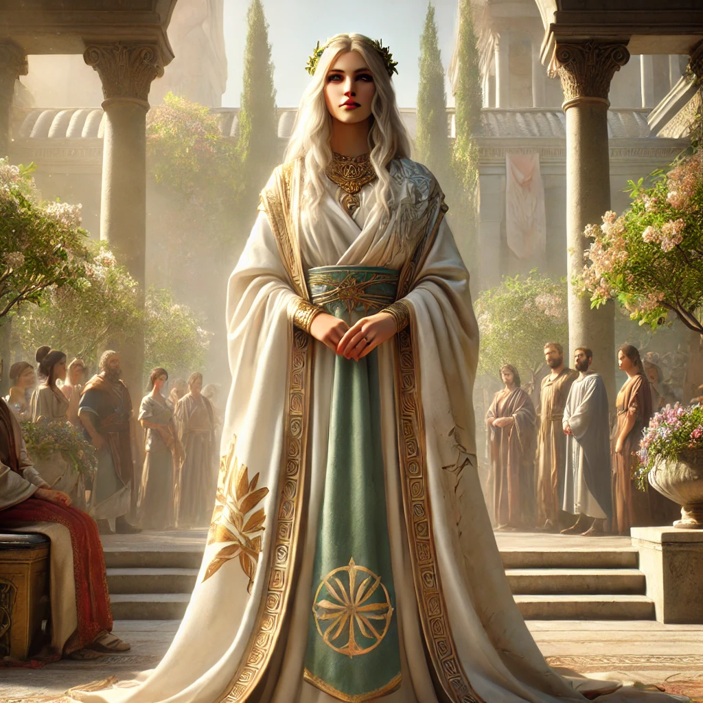
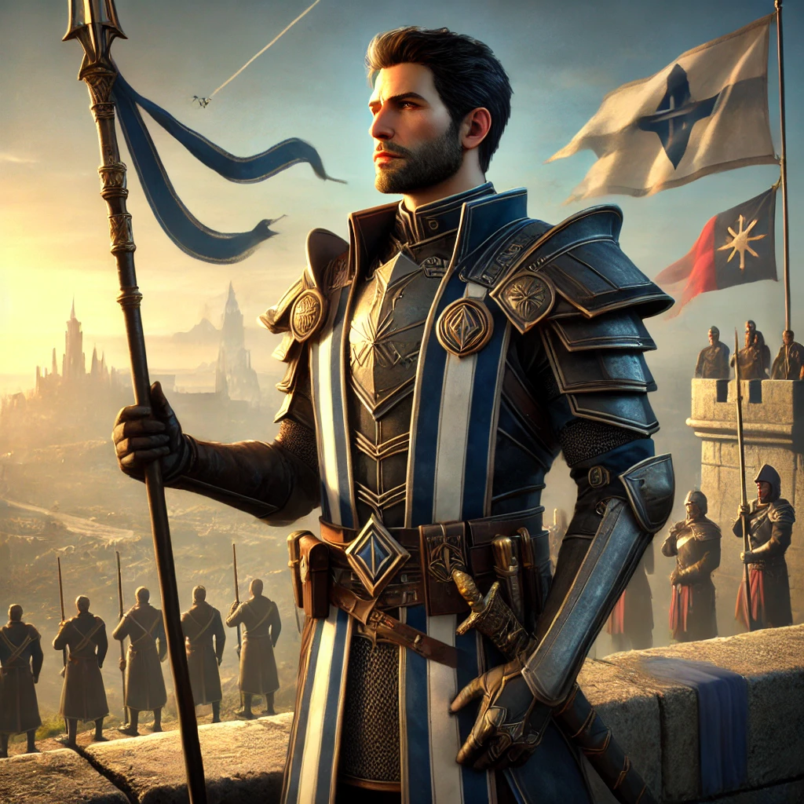
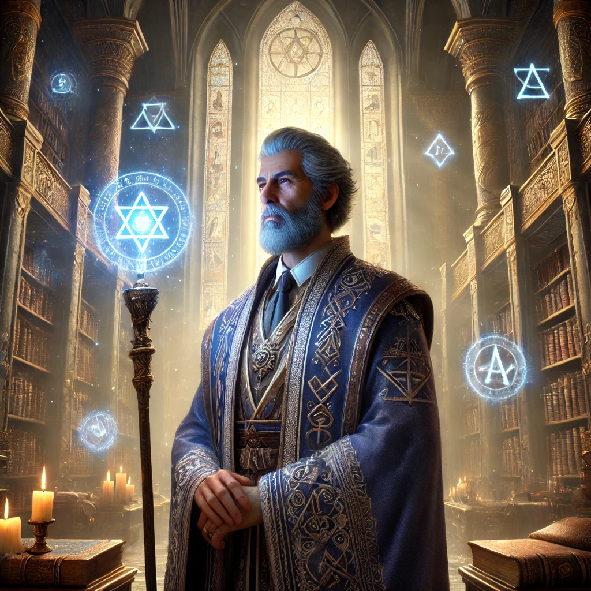
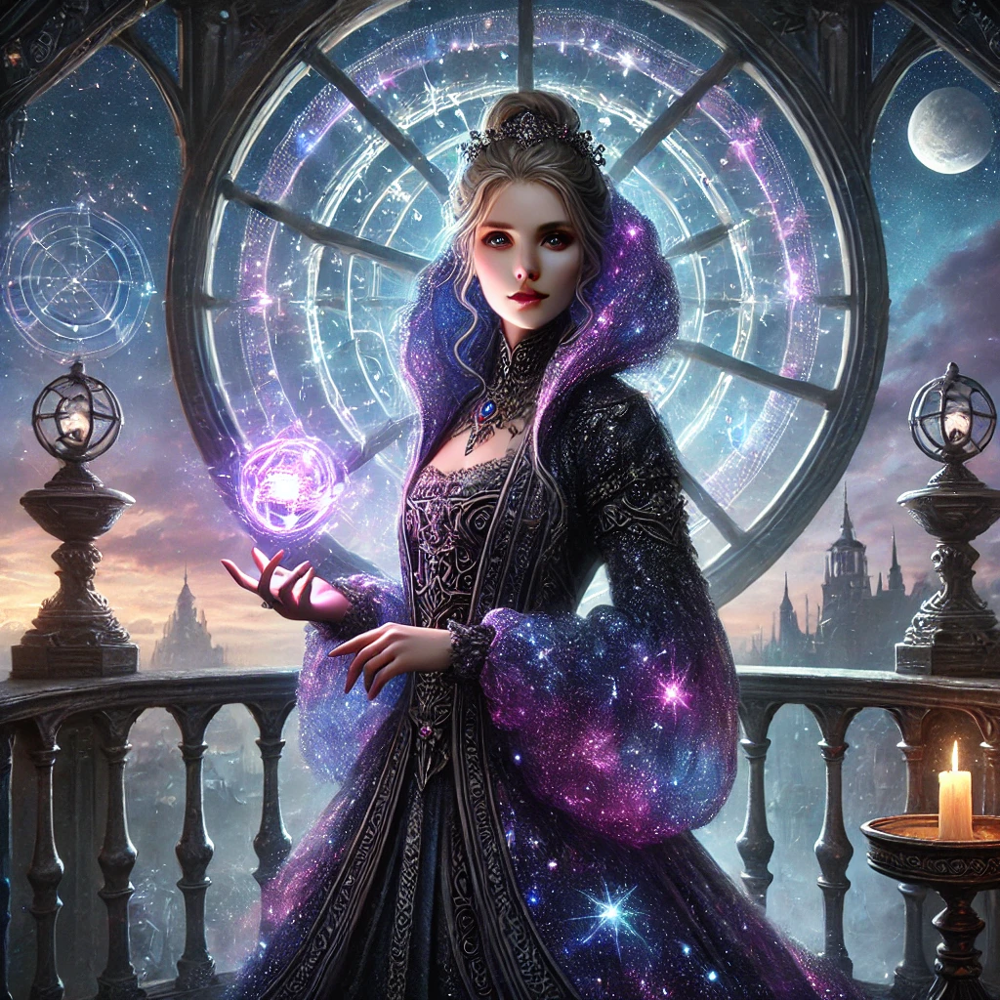

Eldarovská říše je domovem mnoha výjimečných osobností, které svou moudrostí, odvahou a vírou v Cestu Vyváženého Koloběhu formovaly její osud. Od císařského trůnu až po vzdálené filozofy a generály – každý z nich přispěl k zachování rovnováhy v měnícím se světě.
Postavení: Vládnoucí císařovna Eldarovské říše.
Schopnosti: Vynikající diplomatka a filozofka, vzdělaná v umění Koloběhu a státnického vyvažování moci.
Charakter: Uvážlivá, spravedlivá, hluboce zakořeněná ve víře v harmonii.
Liora je považována za jednu z nejosvícenějších panovnic své doby. Usiluje o zachování stability říše prostřednictvím rozumu, rovnováhy a dialogu. Podporuje reformy v oblasti vzdělávání, diplomacie a rovného zastoupení regionů. Veřejně se účastní rituálů Cesty a klade důraz na morální zodpovědnost panovníka vůči lidem i přírodě.
Postavení: Vrchní velitel obranných sil říše.
Schopnosti: Taktik s hlubokým pochopením pohybu armád i myšlenkových toků protivníka.
Charakter: Disciplinovaný, loajální a nekompromisní v ochraně říše.
Seron vede obranu Eldarovských hranic s neochvějným odhodláním. Sloužil během Separatistické války a dodnes je považován za válečného hrdinu. Ačkoli často vystupuje chladně, je znám svou oddaností císařovně a filozofii rovnováhy, kterou se snaží uplatňovat i na bitevním poli.
Postavení: Vedoucí urbanistka a hlavní správkyně obnovy severních provincií.
Schopnosti: Vizionářská plánovačka, spojuje přírodní principy s technikou a kulturou.
Charakter: Idealistická, kreativní, pevně věřící v sílu spolupráce.
Velara byla hlavní iniciátorkou projektů obnovy po Separatistické válce. Pod jejím vedením vznikla nová síť městských center, kde architektura, ekologie a duchovní tradice fungují v symbióze. Její přístup se stal vzorem pro další generace stavitelů a myslitelů.
Postavení: Nejvyšší kurátor vědění a mág-filosof.
Schopnosti: Ovládá harmonickou magii, spojuje magii se znalostmi a filozofií.
Charakter: Tichý, moudrý, s neukojitelnou touhou po pravdě.
Thamriel je strážcem největších pokladů vědění Eldarovské říše. Věří, že porozumění je klíčem k přežití civilizace, a že magie bez morálního základu vede k pádu. Vedl mnoho expedic za poznáním a byl autorem kodexu, který definuje roli učenců v politice a společnosti.
Postavení: Astronomka, alchymistka a vyslankyně ostrovních rad.
Schopnosti: Věštkyně hvězd, specialistka na transformační elixíry a symbiózu magických prvků.
Charakter: Podmanivá, záhadná, propojující světy ducha a vědy.
Enares pochází z hvězdné věže na ostrově Othor a její práce se stala inspirací pro nový směr „nebeské alchymie“. Je také významnou hlasatelkou spolupráce mezi centrální říší a ostrovními komunitami. Podporuje mezioborové výzkumy a duchovní integraci vědy a filozofie.
